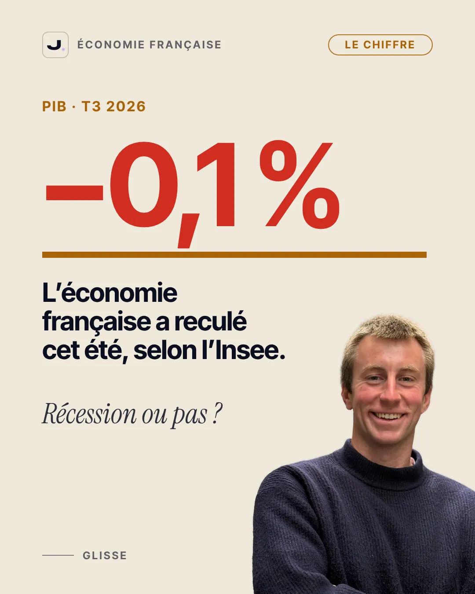
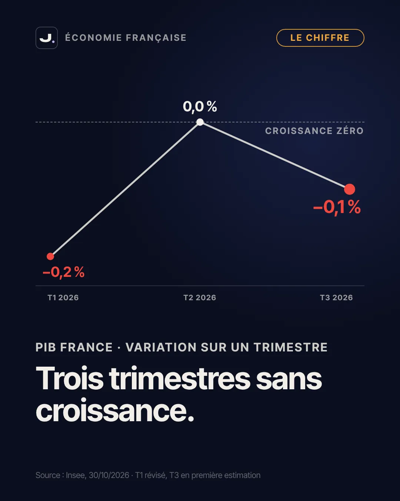
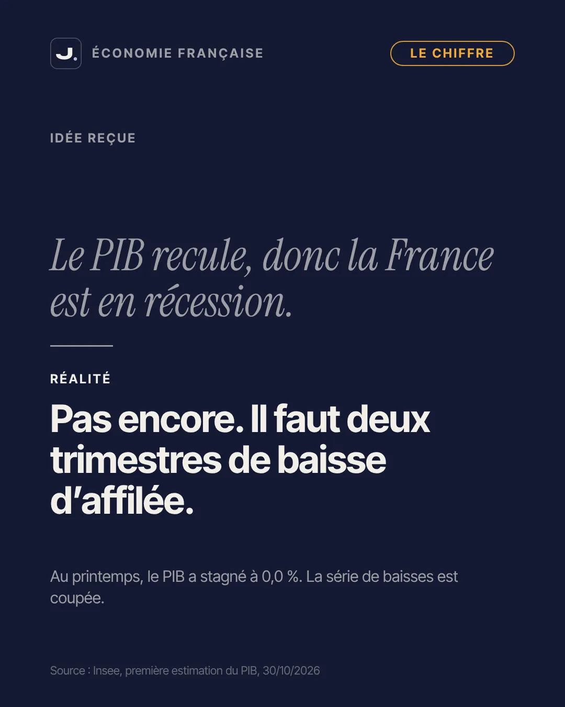
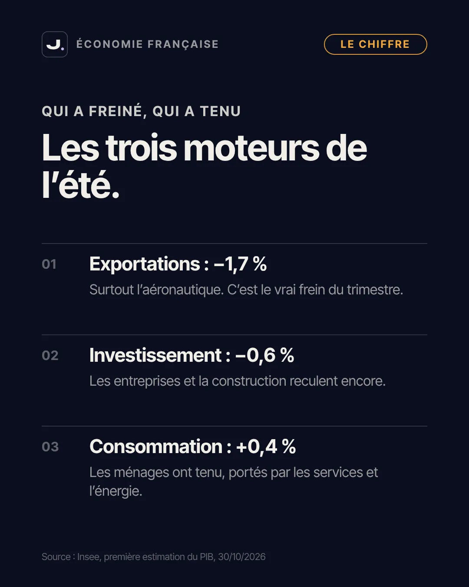
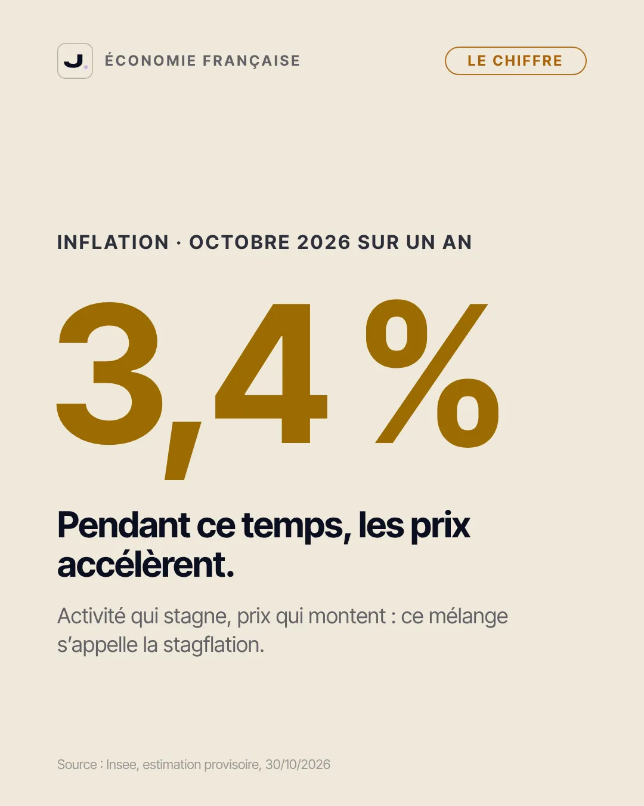
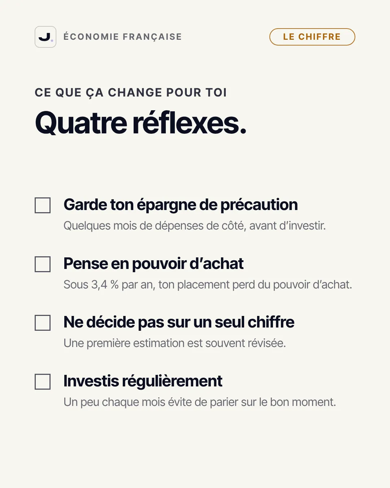

Cet article approfondit mon carrousel de la semaine. Si les mots PIB, inflation ou taux te paraissent flous, commence par mon guide pour comprendre la macroéconomie, puis reviens ici : tout ce qui suit deviendra beaucoup plus simple.

- Ce que l'Insee a publié le 30 octobre 2026
- Le PIB, c'est quoi exactement ?
- La France est-elle en récession ?
- Pourquoi le PIB a reculé cet été
- Et pendant ce temps, les prix accélèrent
- Ce que ça change pour ton argent, étape par étape
- Les erreurs fréquentes face à ce genre de chiffre
- Les limites de ce chiffre
- Passer à l'action
- Le carrousel en images
- Questions fréquentes
Ce que l'Insee a publié le 30 octobre 2026
Le chiffre du jour, c'est −0,1 %. C'est la variation du produit intérieur brut de la France entre le deuxième et le troisième trimestre 2026, autrement dit entre le printemps et l'été. L'Insee parle d'un recul « léger », et c'est le bon mot : un dixième de point, c'est presque plat. Mais c'est un recul quand même, et il intervient après un printemps à 0,0 % et un début d'année à −0,2 %.
Mis bout à bout, ces trois chiffres racontent une économie qui ne grandit plus depuis le début de l'année 2026. Ce n'est pas un effondrement, mais c'est une panne qui dure. Et ce troisième trimestre a surpris : les analystes interrogés avant la publication attendaient une petite hausse de 0,1 %, et la Banque de France tablait elle aussi sur une légère progression.
Un détail important : il s'agit d'une première estimation. L'Insee publie une version plus détaillée un mois plus tard (prévue le 27 novembre 2026), puis révise encore ses comptes au fil des données. Le premier trimestre, par exemple, avait d'abord été annoncé à −0,1 % avant d'être révisé à −0,2 %. Un chiffre de PIB n'est donc jamais gravé dans le marbre le jour de sa sortie.
Le PIB, c'est quoi exactement ?
Le PIB, pour produit intérieur brut, mesure la valeur de tout ce qui est produit dans le pays pendant une période donnée : les voitures, les repas servis au restaurant, les consultations chez le médecin, les logiciels, les avions. On peut le voir comme la taille du gâteau économique.
Quand on dit que le PIB a reculé de 0,1 % au troisième trimestre, on compare la taille du gâteau de l'été à celle du printemps, en retirant l'effet de la hausse des prix. C'est ce qu'on appelle une variation en volume : on regarde si le pays a produit plus ou moins de choses, pas seulement si les étiquettes ont changé. Sans cette correction, l'inflation ferait croire à une croissance qui n'existe pas.
Trimestre ou année, ne mélange pas les deux
Le −0,1 % est une variation d'un trimestre sur l'autre. Ce n'est pas la croissance de l'année. Pour l'année entière, les économistes parlent d'acquis de croissance : c'est la croissance que l'on obtiendrait sur 2026 si le PIB restait stable au quatrième trimestre. Fin septembre, cet acquis était de 0,2 %. On est loin de l'objectif de 0,5 % du gouvernement, et même en dessous des 0,4 % que prévoyaient l'Insee et la Banque de France.
La France est-elle en récession ?
Non, pas au sens technique. Les économistes parlent de récession technique lorsque le PIB recule pendant deux trimestres consécutifs. Or la France a reculé au premier trimestre, stagné au deuxième, puis reculé au troisième. La stagnation du printemps a coupé la série : il n'y a pas eu deux baisses d'affilée.
C'est une distinction qui peut paraître technique, voire un peu hypocrite, puisqu'une économie à 0,0 % n'avance pas davantage qu'une économie à −0,1 %. Elle a pourtant un intérêt : la définition sert de repère commun, et elle évite de crier à la récession à chaque mauvais trimestre. Ce qui compte vraiment, c'est la tendance, et elle est claire : trois trimestres sans croissance.
Ce qui ferait basculer la France en récession technique
Si le PIB reculait à nouveau au quatrième trimestre 2026, on aurait deux baisses consécutives et la France entrerait en récession technique. Personne ne peut dire aujourd'hui si ce sera le cas : je ne fais pas de prévision ici, je te donne simplement la règle pour que tu saches lire le prochain chiffre quand il sortira.
Pourquoi le PIB a reculé cet été
Le PIB se décompose en grands moteurs : ce que consomment les ménages, ce qu'investissent les entreprises et les ménages, ce que dépense l'État, et le solde des échanges avec l'étranger. Cet été, ils ne sont pas allés dans le même sens.
- Les exportations ont chuté de 1,7 %, après une forte hausse au printemps. La baisse vient surtout des matériels de transport, et notamment de l'aéronautique, en recul de 9,1 %. Comme les importations sont restées quasiment stables, le commerce extérieur a retiré 0,6 point à la croissance. C'est le vrai frein du trimestre.
- L'investissement a reculé de 0,6 %, après −0,5 % au printemps. Entreprises et construction continuent de freiner leurs dépenses.
- La consommation des ménages a progressé de 0,4 %, après +0,2 %. Elle a été portée par les achats de véhicules électriques, un rebond des dépenses d'énergie et les services, comme l'hôtellerie, la restauration et les loisirs.
Autrement dit, ce ne sont pas les Français qui ont arrêté de dépenser : c'est surtout l'étranger qui a moins acheté français, à commencer par les avions. Les livraisons d'avions sont irrégulières d'un trimestre à l'autre, ce qui rend ce moteur particulièrement volatil. Un bon trimestre d'exportations au printemps, un mauvais à l'été : une partie du recul est mécanique.
Il faut quand même nuancer l'idée d'une consommation solide : selon l'Insee, les dépenses des ménages en biens ont reculé en août comme en septembre. La hausse du trimestre tient beaucoup aux services et à l'énergie. L'élan reste fragile.
Et pendant ce temps, les prix accélèrent
Le même jour, l'Insee publiait son estimation provisoire de l'inflation d'octobre : les prix à la consommation auraient augmenté de 3,4 % sur un an, après 3,1 % en septembre. Le principal responsable, c'est l'énergie, dont les prix ont bondi de 24,1 % sur un an et qui expliquerait à elle seule environ 1,8 point de l'inflation totale. Les services, notamment l'hébergement et les transports, accélèrent aussi.
Une activité qui stagne et des prix qui montent en même temps, c'est un mélange que les économistes appellent la stagflation. C'est une situation inconfortable pour tout le monde. Pour les ménages, parce que les revenus progressent moins vite que les prix. Pour les banques centrales, parce que leurs outils tirent dans deux directions opposées : baisser les taux pourrait soutenir l'activité mais risquerait d'alimenter l'inflation, et les monter freinerait les prix mais pèserait encore sur la croissance.
Si tu veux voir concrètement ce que fait l'inflation à ton épargne au fil des années, teste le simulateur d'inflation du site, et lis mon article sur comment protéger son patrimoine de l'inflation.
Ce que ça change pour ton argent, étape par étape
Un chiffre de PIB ne doit jamais, à lui seul, te faire changer de stratégie. En revanche, il est l'occasion de vérifier que tes bases sont solides. Voici la méthode que je te propose, dans l'ordre.
1. Vérifie ton épargne de précaution
Dans une économie qui ralentit, le risque concret pour un ménage n'est pas le chiffre du PIB, c'est une baisse de revenus ou une dépense imprévue. Avant d'investir, garde quelques mois de dépenses sur une épargne disponible à tout moment. Mon article sur le fonds d'urgence t'aide à calculer le bon montant.
2. Raisonne en pouvoir d'achat
Avec une inflation de 3,4 % sur un an en octobre, un placement qui rapporte moins que ça te fait perdre du pouvoir d'achat, même si son solde augmente. Ce n'est pas une raison pour tout déplacer du jour au lendemain, mais c'est une bonne raison de regarder le rendement réel de ton épargne, c'est-à-dire son rendement moins l'inflation.
3. Ne décide pas sur un seul chiffre
Une première estimation est souvent révisée, et un trimestre ne fait pas une tendance. Les marchés financiers, eux, réagissent à des milliers d'informations à la fois. Vendre ses placements parce que le PIB a reculé d'un dixième de point, c'est prendre une décision de long terme sur une donnée de court terme.
4. Investis régulièrement
Personne ne sait quand une économie repart. Investir une somme fixe chaque mois, quelle que soit l'actualité, évite d'avoir à deviner le bon moment. C'est le principe de l'investissement programmé, que j'explique en détail dans mon article sur le DCA.
Les erreurs fréquentes face à ce genre de chiffre
Confondre trimestre et année. Un PIB à −0,1 % sur un trimestre ne veut pas dire que l'économie a perdu 0,1 % sur l'année. Regarde toujours la période dont parle le chiffre.
Confondre économie et Bourse. La Bourse de Paris n'est pas l'économie française : les grandes entreprises cotées réalisent une large part de leurs ventes à l'étranger. Un mauvais trimestre en France ne dit pas grand chose de la performance d'un portefeuille diversifié dans le monde.
Croire qu'une récession annonce forcément un krach. Les marchés anticipent souvent les ralentissements avant les statistiques, et l'inverse arrive aussi. Lier mécaniquement les deux, c'est oublier que personne ne connaît le calendrier.
Oublier les révisions. Le chiffre publié le 30 octobre est une première estimation. Le premier trimestre a déjà été révisé. Garde de la distance avec les titres du jour.
Les limites de ce chiffre
Le PIB est un indicateur précieux, mais il a ses angles morts. Il mesure la production, pas le bien être, ni la répartition des revenus, ni l'état des finances de chaque ménage. Une économie peut afficher une croissance correcte pendant que le pouvoir d'achat d'une partie des ménages recule, et inversement.
Ce trimestre est aussi marqué par un facteur très ponctuel, les livraisons aéronautiques, qui peuvent faire varier le PIB d'un trimestre sur l'autre sans dire grand chose de la santé profonde de l'économie. Enfin, la conclusion de cet article, ne pas changer de stratégie sur un chiffre, ne s'applique pas à tout le monde de la même façon : si ton emploi dépend directement d'un secteur qui recule, comme l'industrie ou la construction, renforcer ton épargne de précaution devient une priorité plus urgente que pour d'autres.
Passer à l'action
Comprendre l'économie, c'est bien. Savoir quel investisseur tu es, c'est encore mieux pour ne pas te laisser emporter par les gros titres. Le test gratuit de profil d'investisseur te pose quelques questions sur tes objectifs, ton horizon et ta réaction face aux baisses, et te donne une méthode adaptée à ton profil. Ça prend quelques minutes, et c'est le meilleur point de départ avant toute décision.
Le carrousel en images
Le résumé de cet article en 8 slides, à enregistrer ou à partager.





Un nouveau sujet chaque lundi, vendredi et dimanche : suis la série sur Instagram · TikTok · YouTube.
Questions fréquentes
Quel est le PIB de la France au troisième trimestre 2026 ?
Selon la première estimation de l'Insee publiée le 30 octobre 2026, le PIB français a reculé de 0,1 % au troisième trimestre 2026, après 0,0 % au deuxième trimestre et −0,2 % au premier.
La France est-elle en récession en 2026 ?
Pas au sens technique. Une récession technique correspond à deux trimestres consécutifs de baisse du PIB. La stagnation du deuxième trimestre (0,0 %) a coupé la série. Un nouveau recul au quatrième trimestre ferait en revanche entrer la France en récession technique.
Pourquoi le PIB a-t-il reculé cet été ?
Surtout à cause des exportations, en baisse de 1,7 %, notamment dans l'aéronautique. L'investissement a aussi reculé de 0,6 %, tandis que la consommation des ménages a progressé de 0,4 %.
Qu'est-ce que la stagflation ?
C'est la combinaison d'une activité économique qui stagne et de prix qui augmentent. En octobre 2026, l'inflation française est estimée à 3,4 % sur un an alors que le PIB ne progresse plus depuis le début de l'année.
Faut-il vendre ses placements quand le PIB recule ?
Un seul chiffre de PIB ne justifie pas de changer de stratégie, d'autant qu'il est souvent révisé. Je ne donne pas de conseil personnalisé : vérifie d'abord ton épargne de précaution, ton horizon de placement et ton profil d'investisseur.
Tu veux la méthode complète, pas juste cet article ?
Reçois mon ebook par email : les erreurs qui coûtent le plus cher quand on débute, et la marche à suivre pour les éviter.
- Le PIB français a reculé de 0,1 % au troisième trimestre 2026, selon la première estimation de l'Insee du 30 octobre.
- La France n'est pas en récession technique : il faut deux trimestres de baisse consécutifs, et le printemps était à 0,0 %.
- Le recul vient surtout des exportations (−1,7 %), alors que la consommation des ménages a progressé de 0,4 %.
- Dans le même temps, l'inflation est estimée à 3,4 % sur un an en octobre, tirée par l'énergie.
- Pour ton argent : épargne de précaution, raisonnement en pouvoir d'achat, et pas de décision sur un seul chiffre.
Sources
- Insee, Informations rapides n° 263 : le PIB recule légèrement au troisième trimestre 2026 (−0,1 % après 0,0 %), 30/10/2026
- Insee, Informations rapides n° 266 : en octobre 2026, les prix à la consommation augmenteraient de 3,4 % sur un an, 30/10/2026
- franceinfo, le PIB recule de 0,1 % au troisième trimestre 2026, 30/10/2026
- Economie Matin, l'économie française recule de 0,1 % au troisième trimestre, pénalisée par les exportations, 30/10/2026
- AFP via Zonebourse, France : le PIB a reculé de 0,1 % au troisième trimestre, 30/10/2026
Contenu éducatif, pas un conseil en investissement. Investir comporte un risque de perte en capital ; les performances passées ne préjugent pas des performances futures.
Mesure l'effet de l'inflation sur ton épargne
Le simulateur d'inflation te montre ce que vaudra ton argent dans dix ou vingt ans si les prix continuent de monter.
Ouvrir le simulateur